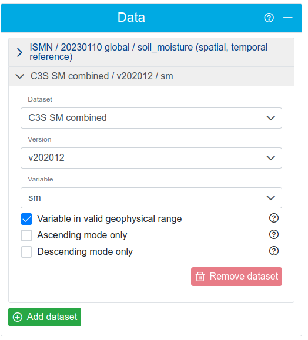
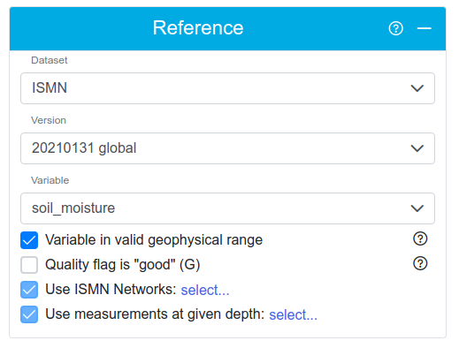
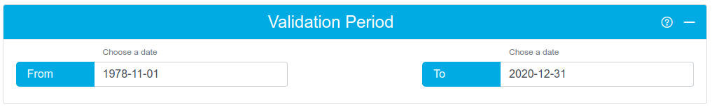
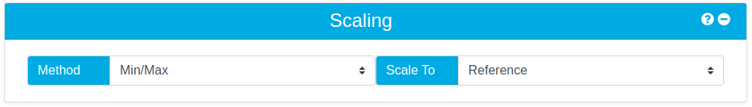
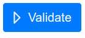
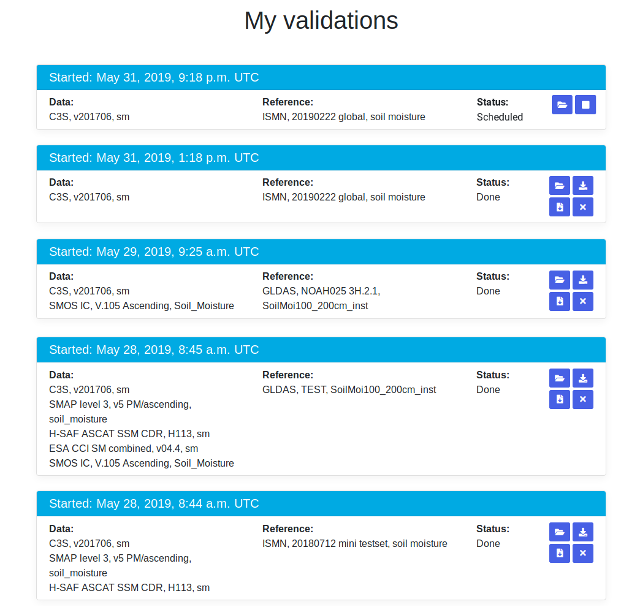
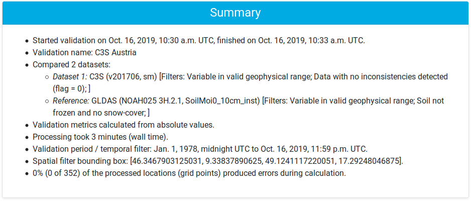

Validate Page
My Validations - Results List Page
Validation Results Page
Published Validations Page
Validate Page
The validate page is subdivided into areas for the various validation parameters. Each area has menu with two icons on the top right. Hover over the question mark to get help for the respective areas. You can use the +/- icon to fold up or fold down the area.
Step 1 - Choose the data you would like to validate - including the dataset name, the version of the dataset, and one of the soil moisture variables provided in the dataset. More details on the supported datasets can be found here.
Step 2 [optional] - Choose the criteria by which you would like to filter this dataset. The filters available depend on the data contained within the chosen dataset. For example, you can filter the C3S data to include only data with no inconsistencies detected (flag = 0). Details of the filter options provided for each dataset are given on the supported datasets page here. You can also hover your mouse pointer over the question mark next to a filter to get a short explanation.
Step 3 [optional] - If you want to intercompare several datasets, you can add more datasets to the validation
using the + button, up to a maximum of five. Configure the settings for the additional datasets by selecting
the respective tab and repeating steps 1 and 2 above.
Intercomparison: The intercomparison mode of QA4SM validates up to five satellite data sets against a common reference data set. For each reference location (e.g. each ISMN station) it finds the nearest observation series in all selected satellite products. All observations series are then scaled (if selected) and temporally matched to the reference series. For validation only the common time stamps (that are available in all satellite products) are used to calculate validation metrics between the reference and each individual satellite product. This way deviations in the metrics due to different temporal coverage are excluded and validation results represent differences in the performance of the compared satellite products.

Step 4 - Choose the reference dataset you would like to use for the validation including the dataset name, the version of the dataset, and the soil moisture variables provided in the dataset. More details on the supported datasets can be found here.
Step 5 [optional] - Choose the criteria by which you would like to filter the reference data prior to running the validation. The filters available depend on the data contained within the chosen dataset. For example, you can filter the ISMN data to include only data points where the soil_moisture_flag is "G" for "good". Details of the filter options provided for each dataset are given on the supported datasets page here. You can also hover your mouse pointer over the question mark next to a filter to get a short explanation.
Step 6 [optional] - If you want to calculate metrics from anomalies instead of absolute values, select the desired method in the "Method" drop-down menu. The options are:
- Do not calculate: don't calculate anomalies, use absolute values.
- 35 day moving average: calculate the differences between each measurement value and the 35 day moving average around the value.
- Climatology: calculate the differences between each measurement value and the climatology value for that day of the year. The climatology is calculated producing an average for each day of the year across the input dataset over the given climatology period. You have to specify which years to use for climatology calculation.
Step 7 [optional] - Chose the geographic area over which the validation should be performed. You can either specify a lat/lon bounding
box directly or you can select the area on a map by clicking the globe button. The trash button will clear all four bounding
box fields.
If you don't specify an area, a global validation will be done.
Step 8 [optional] - Choose the date range over which the validation should be performed. Accepted formats are: YYYY*MM*DD or DD*MM*YYYY where * can be any of ".", "/" or "-". If you don't provide a period it will be implicitly determined through temporal matching of the data and reference selected. For the time range covered by the various datasets, see the datasets page.
Step 9 - Choose how the data (or reference) will be scaled before metrics calculation. The data can be scaled to the reference (default) or vice versa. Note that in an intercomparision validation (with multiple datasets), only scaling to reference is possible. The scaling method determines how values of one dataset are mapped onto the value range of the other dataset for better comparability.
Step 10 - Optionally name your validation results to make it easier to identify it in the list of all your validations.
Step 11 - Run the validation process. You'll be notified via e-mail once it's finished. You don't need to keep the results window (or even your browser) open for the validation to run. The email will contain a link to your results.
My Validations - Results List Page
The list shows all your validations, including the currently running ones, sorted by date (latest first).
Note: Your validations will be automatically removed {{ expiry_period }} days after completion by our auto-cleanup process, unless you extend or archive them. You will be warned via email about validation expiry {{ warning_period }} days before deletion.
The icons in the validations' title bars indicate the following:
- The validation was cancelled.
- The validation is still running and has no results yet.
- The validation has completed. It will be removed by the auto-cleanup process {{ expiry_period }} days after completion, unless you extend or archive it. You can see the expiration date by hovering your mouse over the icon.
- The validation has been archived and won't be automatically removed by the cleanup process.
- The validation will expire within the next {{ warning_period }} days and will then be removed by the auto-cleanup process, unless you extend or archive it. You can see the expiration date by hovering your mouse over the icon.
The buttons on the right-hand side of each validation have the following effects:
- You can access the results details page of a validation through its folder button.
- The stop button is only visible while the validation is still running and allows you to abort it.
- The remove button is only visible once the validation has finished or was aborted and will permanently delete the result.
- The download graphs button allows you to download all graphs produced for the validation (in png and svg formats) in a zip archive.
- The download NetCDF button allows you to download the validation result (metrics computed).
- With the extend lifespan button, you can reset the auto-cleanup period of a result and thus postpone its automatic removal. You can use this if you're not sure yet whether you want to keep it - you will have another {{ expiry_period }} days to decide and will be notified (again) before deletion.
- With the archive button, you can exclude a validation from auto-cleanup and thus keep it indefinitely.
- With the un-archive button, you can make a validation eligible for auto-cleanup again. It will be automatically extended, so you will have another {{ expiry_period }} days before deletion and will be notified (again).
Validation Results Page
Once the validation process is finished, you can see a summary of the validation run on the results page.
The buttons at the bottom of the result overview have the following effects:
- Remove will permanently delete the result.
- Renew will reset the auto-cleanup period of a result and thus postpone its automatic removal. You can use this if you're not sure yet whether you want to keep it - you will have another {{ expiry_period }} days to decide and will be notified (again) before deletion.
- Archive will exclude a validation from auto-cleanup and thus keep it indefinitely.
- Un-archive will make a validation eligible for auto-cleanup again. It will be automatically extended, so you will have another {{ expiry_period }} days before deletion and will be notified (again).
The following metrics are calculated during the validation process:
| Name | Description |
|---|---|
| Pearson's r | Pearson correlation coefficient |
| Pearson's r p-value | p-value for pearson correlation coefficient |
| Spearman's rho | Spearman rank correlation coefficient |
| Spearman's rho p-value | p-value for Spearman rank correlation coefficient |
| Root-mean-square deviation | Root-mean-square deviation |
| Bias (difference of means) | Average Error |
| # observations | Number of Observations |
| Unbiased root-mean-square deviation | Unbiased root-mean-square deviation |
| Mean square error | Mean square error |
| Mean square error correlation | Mean square error correlation |
| Mean square error bias | Mean square error bias |
| Mean square error variance | Mean square error variance |
Visualisations of these metrics are displayed in the Result Files section of the page: boxplots and geographical
overview maps. You can select the metric shown with the left drop-down button below the graphs.
For an intercomparison validation, all boxplots are combined into one graph. The dataset displayed in the overview
map can be selected with the drop-down button on the right.
You can also download a zipfile of all the plots in png and svg (vector) format by clicking on the Download all
graphs button, and the result NetCDF file
with all metrics with the Download results in NetCDF button.
Published Validations Page
The list shows validations on the QA4SM service that have been published to Zenodo by their owners. This means the results can be cited with a DOI.
If you want to email us to send comments, report errors, or ask questions, you can do so at qa4sm (at) awst.at .
Back to top